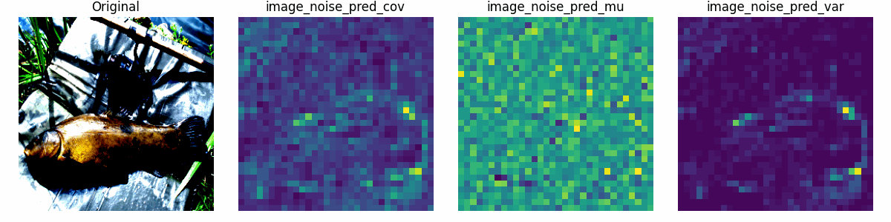

Can we better explain classification with generative models?

These days I'm working on a project that involves understanding generative models and classification with them. One question that came to my mind is whether we can use our traditional understanding of classification for generative-based classifiers? To analyze this question, I am trying to see which of the spectral properties we have seen in the past for discriminative classifiers also hold for generative-based classifiers. I am also trying to show any spectral bias in the generative-based classifiers compared to discriminative classifiers. I will update this post with my findings and insights as I work on this project.
For this project I'm aiming a Workshop paper, so I will be sharing my findings in a more detailed in the paper, I'll then turn this post into a page that summarizes the paper. However, I just put this cool visualization here just to keep this post attractive and to show the kind of insights I'm looking for in this project. This visualization shows the spectral bias of a generative-based classifier over diffusion time.